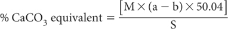

In this titration procedure, soil is treated with dilute HCl and residual acid is titrated with standard 0.5 M sodium hydroxide (NaOH). Results are referred to as ‘CaCO3 equivalent’ since the reaction is not selective for calcite; other carbonates including dolomite will be included to some extent.
Table 19.1. Summary details of method codes, method titles, technologies and notes for soil carbonate tests described in this chapter†.
Code |
Technology |
Test method |
Notes |
19A1 |
Chemical reaction with dilute HCl; residual acid titrated with standard 0.5 M NaOH. |
Carbonates – rapid titration. |
Semi-quantatitive for carbonates. |
19B1 |
Increase in pressure generated by the CO2 released after reaction with HCl at room temperature. |
Carbonates by pressure change – manometric. |
Semi-quantatitive for carbonates plus indication of dolomite from reaction rate plots. |
19B2 |
|
Carbonates by pressure change – transducer. |
Semi-quantatitive for carbonates. |
19C1 |
Chemical reaction with dilute HCl and subsequent observations. |
Spot field test for the presence of soil carbonates with HCl |
Qualitative for presence or absence. |
19D1 |
|
Field test for soil carbonates with HCl and effervescence class assessment. |
Qualitative for presence, absence, plus amount. |
†See also Method 6E1 for carbonate by loss-on-ignition.
1 M Hydrochloric Acid
Dilute 100 mL of 10 M HCl, mix and make volume to 1.0 L with deionised water.
0.5 M Sodium Hydroxide
Dissolve 20.0 g sodium hydroxide (NaOH pellets) in deionised water and make to 1.0 L. Stand-ardise against potassium hydrogen phthalate (KHC8H4O4) in a similar manner to that described in Method 4D1. Special precautions to exclude CO2 prior to standardisation are unnecessary.
Phenolphthalein Indicator (0.1%)
Dissolve 100 mg phenolphthalein (C20H16O4) in 100 mL ethanol (C2H5OH).
Weigh 5.0 g air-dry soil (<2 mm) into a 250 mL wide-mouth plastic extracting bottle. Include two blanks (no soil) plus either a reference sample or 0.5 g CaCO3 powder. Use 2.5 g of air-dry soil (<2 mm) if the soil is known to contain >30% carbonate.
Add 100 mL 1 M HCl, cover in a manner that permits release of any CO2, and swirl occasionally for 1 h at ≈25°C. Allow to stand overnight, cap securely, then mechanically shake for 2 h.
Let the suspension settle then filter or centrifuge. Take 10 mL supernatant into a 100 mL Erlenmeyer flask and add 25 mL deionised water. Add 2–3 drops Phenolphthalein Indicator and titrate with standard 0.5 M NaOH.

where:
a = mL standard 0.5 M NaOH used for blank
b = mL standard 0.5 M NaOH used for sample
S = weight (g) of air-dry soil
M = molarity of standard NaOH (usually 0.5 M)
50.04 = 50.04 × 10–3 × 10 × 100% (where 50.04 is the equivalent wt of CaCO3)
Report CaCO3 equivalent (%) on an oven-dry basis. Use the air-dry moisture to oven-dry moisture ratio to for the oven-dry conversion. Refer to Method 2A1 for guidance with regard to this soil moisture calculation.